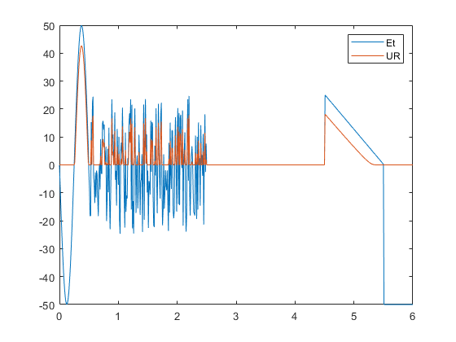

5.laboratorijas darbs
Artuurs Justs (REBMO2)
Contents
Darba uzdevumi
- Atkaartot to kas bija raadiits klasee ieliekot savu signaalu un diodi, resp.
- Ielikt savu signaalu no 3.laboratorijas darba
- Ielikt savu diodi (i0,a parametri)
- a nav dots, to ir jaatrod izmantojot grafika doto informaaciju (Atrast) un uzziimeet uz viena grafika
- Ieejas spriegumu (E), izejas spriegumu (UR)
- !!! Es izmantoju grafikus un parametrus no Artuura Lillaisa darba, jo kad tika taisiits 3 lab. darbs, nebija induviduala uzdevuma uz mana vaarda
function Laboratorijas_Darbs_5 global E R i0 a Ud = 2; id = 4.5; R=2; i0 =1e-05; a=2; t= 0:0.01:6; % konstantes (2; 5; 10 vai 100) Et = 50*lab3_done_v2(t); URm = []; for E = Et UR = newmet5; URm = [URm,UR]; end plot(t,Et,t,URm) legend('Et','UR') % Otraa funkcija function x0 = newmet5 epsilon = 1e-3; x0 = 0; delta = funx(x0)/fund(x0); while(abs(delta)>epsilon) delta = funx(x0)/fund(x0); x0 = x0-delta; end % Treshaa funkcija function fx = funx(UR) global E R i0 a fx = i0*(exp(a*(E-UR))-1)-UR/R; % Ceturtaa funkcija function fx = fund(UR)
global E R i0 a
fx = - 1/R - a*i0*exp(a*(E - UR));
 Secinaajumu
- Sini darbaa es labaak iepazinos ar funkciju/ciklu darbiibu un to izveidoshanu. Arii labaak iepazinos ar taadu programmas iespeeju, kaa datu izmantoshana no pagaishaa darba un to apstraadi nakoshaajaa.